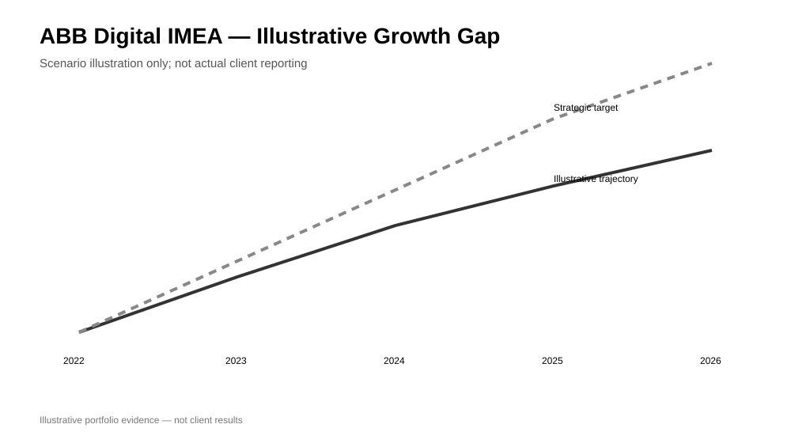
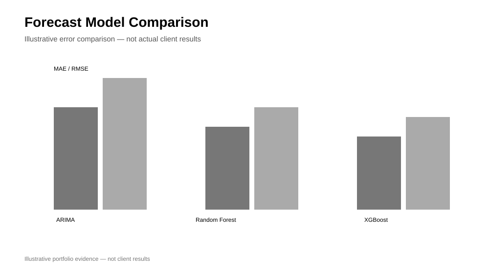

Professional / sanitized
ABB Digital IMEA Growth Analytics
Growth analytics combining historical orders, pipeline analysis, country clustering, forecasting experiments, scenario analysis and executive dashboard design.
Power BIForecastingSegmentationScenario analysis
Open case study →
